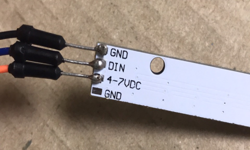

先生に助言をいただきNeopixelをArduinoで動かしてみることになった。
使用したNeopixelはHiLetgoのWS2812 です。5個セットで900円ぐらいでした。 届いてから気づいたのですが、はんだ付けをしないと接続できないタイプでした… もっと確認するべきでしたね。
はんだとはんだごてを探していたところ、なんと100均にありました。しかも結構使えます。

#include
まずNeopixcelのヘッダファイルというものをインクルードする必要がある。
Adafruit_NeoPixel strip = Adafruit_NeoPixel(8, 3, NEO_GRB + NEO_KHZ800);
次にオブジェクト宣言します。８は連続したNeopixelの数（ライトの数）を表しています。使うNeopixelによって変更する必要がある。３は接続されているArduinoのピン番号です。NEO_GRB + NEO_KHZ800はNeopixelのタイプを表す値です。
void setup() { strip.begin(); }
strip.begin();で出力データピンの準備。
colorWipe(strip.Color(50, 50, 0), 5000);で光の明るさ（0が最も暗く、255が最も明るい）や色を決める。（0，0，0）左から赤、緑、青を表していて、色を混ぜることもできる。赤50と緑50を混ぜると黄色になった。
void colorWipe(uint32_t c, uint8_t wait) { for(uint16_t i=0; i＜strip.numPixels(); i++) { strip.setPixelColor(i, c); strip.show(); delay(wait); } }
このFor文を解釈するのが難しかった。 i=0;i＜strip.numPixels();
iはPixelの数を表している。今回使ったNeopixelのPixelは8つ。ゼロから数え始めたとしたら0～7の番号が各Pixelに振り分けられる。そしてi++は+1を表している。つまりuint16_t i=0; i＜strip.numPixels(); i++はiが0より大きかったらPixelの数を+1（次のPixelへ信号を送る）ということではないだろうか。
strip.setPixelColor(i, c);
iはPixelの番号、cはloop関数で指定した色を指しているのではないだろうか。